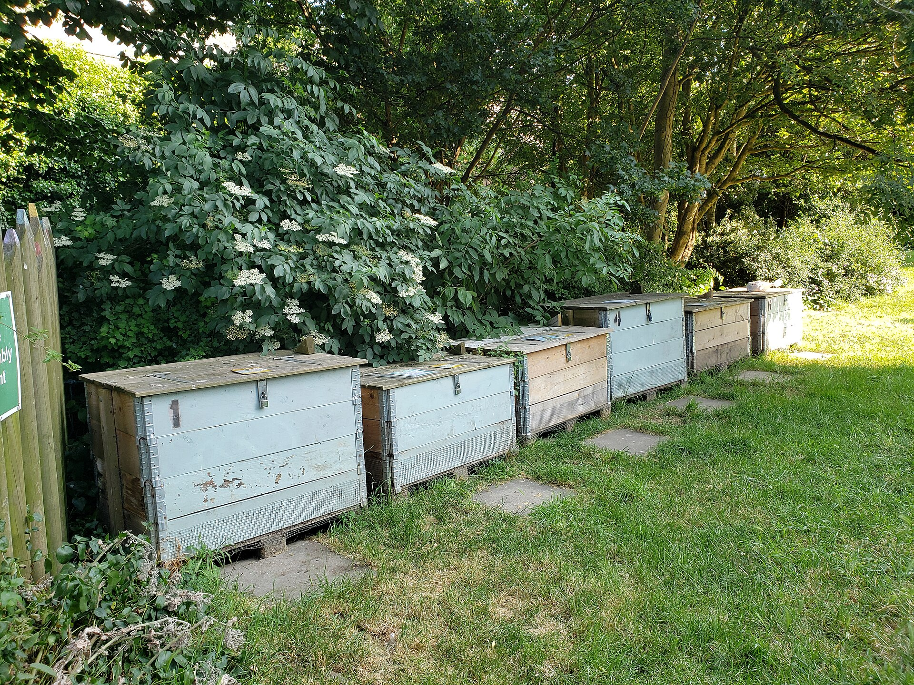

Best Materials for Tumbler Composting
What can you put in a compost tumbler? Learn which materials work best, how to balance greens and browns.
Greens (Nitrogen-Rich)
Tumblers need a good balance of greens to browns — aim for roughly 1 part green to 3 parts brown by volume.
Fruit and Veggie Scraps
Chop into small pieces (under 2 inches) for faster decomposition in the confined space of a tumbler.
Coffee Grounds
Add nitrogen quickly. Use up to 1 cup per layer without overwhelming the carbon balance.
Tea Bags (remove staples)
Fine material that breaks down fast in a tumbler's confined space.
Garden Clippings
Fresh grass clippings, herb trimmings, and flower cuttings all work well.
Browns (Carbon-Rich)
- Dry leaves — the best brown material for tumblers
- Shredded cardboard or newspaper (remove tape and staples)
- Sawdust from untreated wood
- Pine needles (in moderation, they are acidic)
Materials to Avoid in Tumblers
- Large woody branches — too dense for tumbler rotation to break down
- Citrus peels (in excess) — can slow decomposition and attract pests
- Diseased plant material — tumblers do not reach thermophilic temperatures reliably
- Pet waste — contains pathogens not killed by tumbler composting
Size and Preparation Tips
The confined space of a tumbler means material size matters more than in open piles. Chop everything to under 2 inches for best results. Shredded leaves work better than whole leaves.